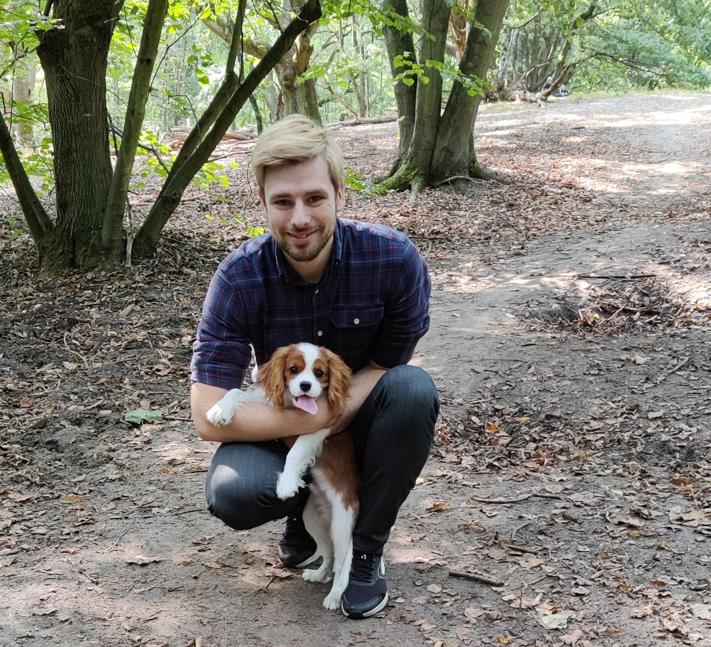

Here are some of my hobbies that i do with my spare time.
--Motorcycle-Driving
Motorcycle driving is a big passion of my and after many years of touring around europe, i achieved a large amount of nice memories doing so.
In 2018 did i drove from Belgium all the way to Finland, Tampere to visit a friend. and in 2019 drove all the way to Poland Warsaw, passing Berlin, Prague, Brno, Kraków and Lódź along the way.
At some point in the future will i use my personal blog to write my experiences on driving very long distances with an motorcycle to help new drivers into this trait.
--books
I love reading books, and i try to read when i have the time for it, my two most favorite books would be E.B Sledge With the old breed and Jordan B. Peterson 12 rules for life.
--Powerlifting
I started training when i was 16yrs, where i tried over the course of time different disciplines and diets. where i ended up loving the Powerlifting discipline the most and its techniques.
--food
I have an absolute passion for cooking, and it is a big source of relaxation to be behind cooking fires and creating your favorite meals.
My favorite meal would be self-made hamburgers, they are simply the best.
--music
I love a wide range of music and i do put allot of effort in maintaining a high quality personal music library. though i have to confess that my all time favorite album would be Random Access Memories from Daft Punk.
--pets
In the beginning of covid did i get the pleasure of having Martin in my life, he is an King Charles Cavalier and as any cavalier dog is very kind, very active and mostly very affectionate.
Once the borders started going open again, did he leave for Guatemala to his permanent owners where he will have the perfect dog life, running around with others dogs in a big garden and been a professional show dog.
